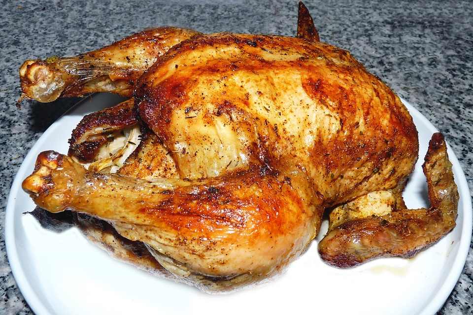

Grilled Chicken
If you're looking for a delicious way to make grilled chicken, look no further than Thai style grilled chicken known as gai yang. The chicken is marinated in heaps of garlic, black pepper, lemongrass, palm sugar, and some soy sauce for saltiness. Thai grilled chicken is juicy and full of amazing flavor!
Ingredients
- 2 whole chickens (mine were 1.8 kilos each)
- Bamboo sticks or skewers
- Charcoal
- Grill
Marinade
- 4 tablespoons soy sauce
- 1 tablespoon fish sauce
- 2 tablespoons palm sugar
- 1 tablespoon sweet dark soy sauce (you can use kecap manis)
- 8 tablespoons water
- 4 heads garlic (30 - 40 cloves)
- 2 stalks lemongrass
- 2.5 tablespoons black pepper corns
- 18 fresh coriander roots (or you can try the powder coriander roots)
Gai Yang Sauce
- 1.5 tablespoons khao kua
- 1.5 tablespoons chili flakes
- 1 tablespoon of sugar
- 3 tablespoons fish sauce
- 8 tablespoons tamarind juice
Recipe Instructions
- For this recipe, I’m going to cook 2 full chickens, together weighing in at 3.6 kilos. If you wanted, you could also make this recipe with 3 - 4 kilos of chicken pieces, or really, however much chicken you want.
- For this gai yang (ไก่ย่าง) to be at its finest, it’s best to marinate the chicken overnight and grill it the next day, but if you don't have the time, marinate the chicken for at least a few hours.
Chicken Marinade
- Peel about 4 bulbs of garlic, which should be about 30 - 40 cloves in all.
- Thinly slice 2 stalks of lemongrass and cut off the roots of 8 stalks of coriander
- Now comes the hard part, pounding everything using a mortar and pestle(If you don’t have a mortar and pestle you can blend the ingredients in a food processor (but I’d really recommend you invest in a Thai style mortar and pestle
- Add small amounts of garlic, lemongrass, black peppercorns, and coriander roots to the mortar and pestle and pound them until the oils come out, and you have a coarse paste. Keep pounding until all the marinade ingredients are finished. You’ll probably need to load the mortar a few times.
- Put all the pounded marinade ingredients in a mixing bowl, stir them up, and add 4 tablespoons of light soy sauce, 1 tablespoon of dark soy sauce, 1 tablespoon of fish sauce, and 2 tablespoons of palm sugar. Mix everything together while adding about 8 tablespoons of water to the mixture. You should end up with a potent marinade that looks like a chunky garlicky sauce.
- If you’re using whole chickens, you'll want to butterfly cut them starting from the breast side down to the butt. Flatten the chickens out. This is going to prepare it for the grill
- In a big pan or mixing bowl start to rub the marinade on the chicken, making sure the garlic, herbs, and soy sauce go into all parts of the chicken. Rub down both chickens using all the marinade.
- The final step is to toss the Thai sweet basil, turn off the heat, and just let the sweet basil wilt into the curry.
Grilling
- The next day, take out your chicken, and the first step is to light your charcoal. You want a low even heat, coals that aren't too hot, but allow and even.
- Put the chicken on the grill and begin cooking
- Wait about 20 minutes or so (but monitoring them to make sure they don't burn), before making your first flip. You can baste the chicken Cook the chicken on low heat for about 1.5 hours, until the chicken is cooked through to the bone and the skin is golden dark brown on the outside.
- Take the chicken off the grill, and dismantle the bamboo supports.
- If you have a Chinese cleaver, first cut the chicken in half from the neck to the butt, and from there cut off the drumstick, wing, and chop the rest of the chicken into strips.
Gai yang sauce (Nam jim jaew )
- Semi-dried tamarind pulp can usually be bought at the supermarket in a small block. To rehydrate it, get a couple tablespoons of hot water and start to work the tamarind into the hot water. This should turn it into a nice tamarind water sauce.
- In a bowl, mix 1.5 tablespoons of khao kua (toasted sticky rice, recipe here), 1.5 tablespoons of chili flakes, 1 tablespoon of sugar, 3 juice tablespoons of fish sauce, and 8 tablespoons of tamarind.
- Mix all of the ingredients together.
- After mixing up the sauce, make sure you taste test. You're looking for the perfect sweet, sour, and salty combination. You might need to add more tamarind juice, more sugar, or more fish sauce to balance it out.
- Top off your gai yang sauce with some chopped up cilantro.
- Happy eating!

All Rights Reserved